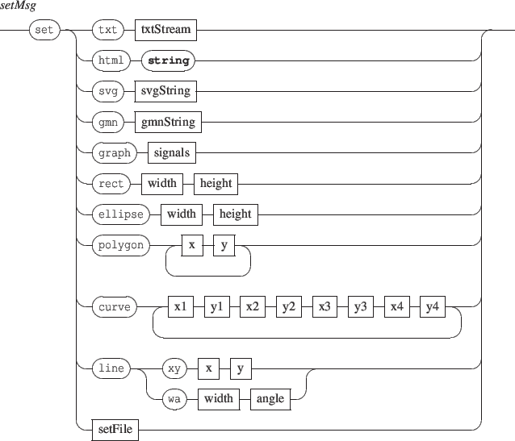

Next:
8.3 Score pages management
Up:
8. Component specific messages
Previous:
8.1 Pen control
Contents
Index
8.2 Width and height control
Messages accepted by the components types
rect | ellipse | graph.

Grame
-
Interlude project
[ANR-08-CORD-010]